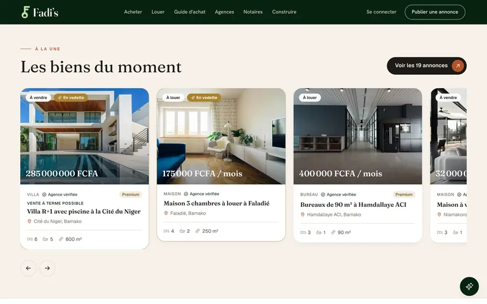
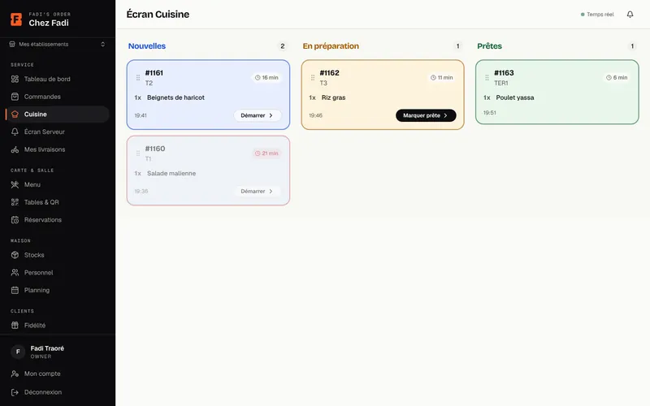
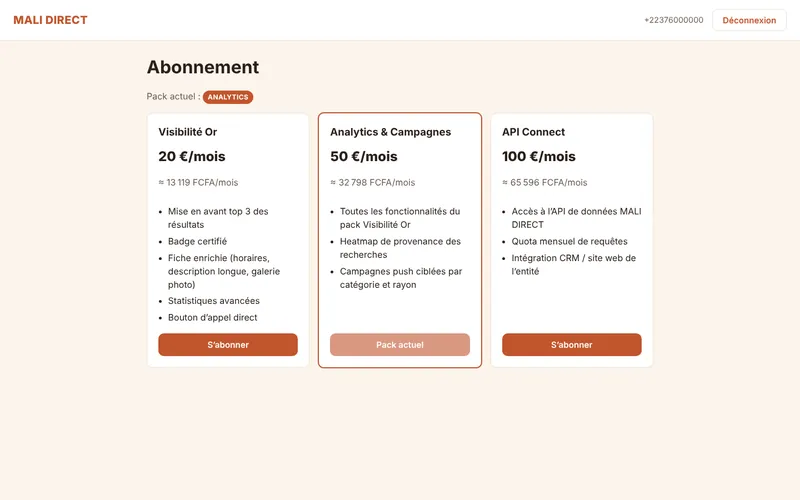
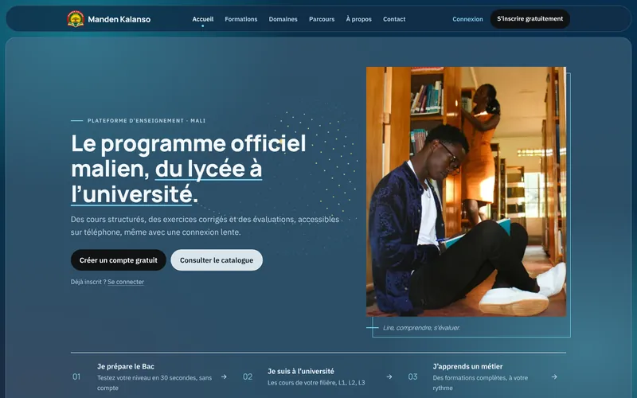
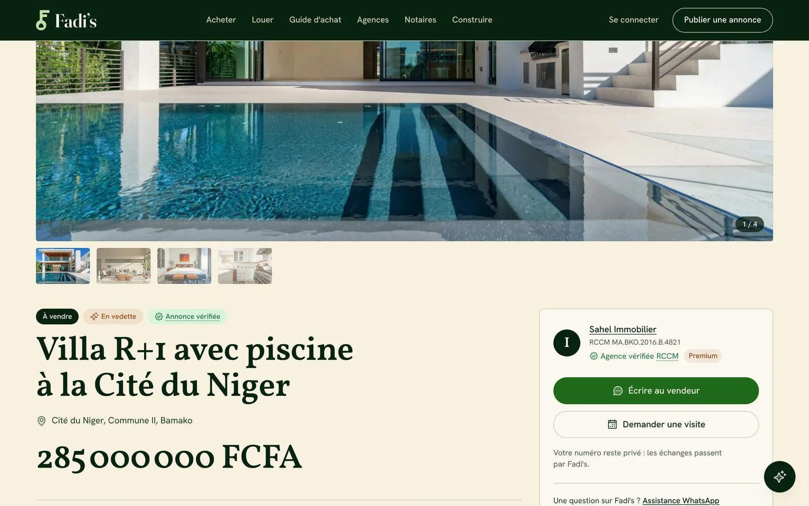

Des plateformes faites pour le Mali.
Full-stack à Bamako : web, mobile, USSD et mobile money.
De l’annonce immobilière à l’épargne scolaire
Six projets, trois en ligne. Ouvrez une ligne pour le détail.
-
Fadi’s
L’immobilier vérifié à Bamako : annonces modérées, agences contrôlées.

Maisons, villas et terrains à vendre ou à louer. Agences vérifiées par leur RCCM, messagerie qui protège le numéro, simulateur de crédit, vente à terme, devis de constructeurs, services payants par Orange Money ou Moov.
Next.js, NestJS, Prisma, PostgreSQL, Socket.IO, Supabase, Vercel, Render, GitHub Actions
-
Fadi’s Order
Menu, commandes, cuisine et caisse pour les restaurants.

Menu digital ouvert par QR code, commandes, écran cuisine en temps réel, personnel, caisse, fidélité et réservations. Un même compte gère plusieurs établissements, chacun isolé.
Next.js, NestJS, Prisma, PostgreSQL, Redis, Socket.IO, Turborepo, Docker
-
Mali Direct
Trouver un lieu et son itinéraire, par appli, SMS ou USSD.

Une pharmacie, une mairie, un restaurant ou une boutique, et le chemin pour y aller, demandés en français ou en bambara. Une application, un portail pour les commerces, le SMS et l’USSD. Back-end couvert par 48 tests automatisés.
Flutter, Node.js, Express, React, Vite, Firestore, Google Cloud Run
-
A Sara Doni Doni
L’épargne scolaire payée petit à petit par mobile money.

Épargne scolaire et objectifs d’achat. Rechargement Orange Money, Moov ou Wave (simulé pour la démo), prélèvements quotidiens automatiques, espaces parent, école, vendeur et administrateur, journal d’audit, export CSV.
Python, Flask, SQLAlchemy, JWT, Chart.js, Docker
-
Manden Kalanso
Cours, QCM et certificats pour les élèves maliens.

Une application installable pour le lycée, le supérieur et les filières professionnelles : leçons courtes, QCM corrigés par le serveur, examens et certificats vérifiables. J’ai contribué à ce projet d’équipe.
React, Vite, Tailwind CSS, Express, PostgreSQL, Supabase
-
ESGIC Info Hub
Formations, campus et inscription pour mon école.

Présentation des formations et de leurs frais, des campus, et un formulaire d’inscription en ligne. Mon premier site en React.
React, TypeScript, Tailwind CSS, shadcn/ui
Fadi’s, ouvert au public en novembre
Agences vérifiées par leur RCCM, numéro protégé. Ouvrir Fadi’s



Du téléphone jusqu’au paiement
Choisissez un projet pour suivre son chemin.
Huit écrans de téléphone, sans retouche

Fadi’s Order, le menu du client 
Fadi’s Order, l’écran cuisine 
A Sara Doni Doni, le rechargement 
Manden Kalanso, le catalogue 
Fadi’s, les biens du moment 
A Sara Doni Doni, l’espace parent 
Manden Kalanso, une leçon 
ESGIC Info Hub, l’accueil
De l’ESGIC à la production
Basé à Bamako.
- FormationInformatique de Gestion à l’ESGIC
- ESGIC Info Hub, premier site en React
- Début de Fadi’sDu design à l’API.
- Lancement de Fadi’s OrderCommandes, cuisine en temps réel, caisse.
- Mali Direct et A Sara Doni DoniUn annuaire vocal, une maquette pour investisseurs.
- Contribution à Manden Kalanso
- Fadi’s ouvert au publicSauvegardes, contrôles quotidiens, déploiement automatique.
- Téléphone et WhatsApp
- +223 70 99 77 81
- GitHub
- DOSSOBABY